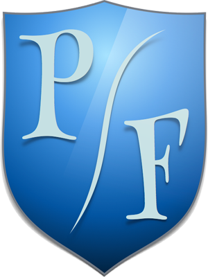

Manual de Desarrollador

Bienvenido al Manual de Desarrollador de Poli Fighters, aquí encontrarás todo lo referente a la construcción, el desarrollo y la modificación del juego.
Bienvenido al Manual de Desarrollador de Poli Fighters, aquí encontrarás todo lo referente a la construcción, el desarrollo y la modificación del juego.
Usa la barra de navegación para mirar las secciones de este manual.
Para ir a la página web del juego haz click aquí.
Revisa la Librería del juego a través de este enlace.
También puedes visitar nuestro repositorio en GitHub.